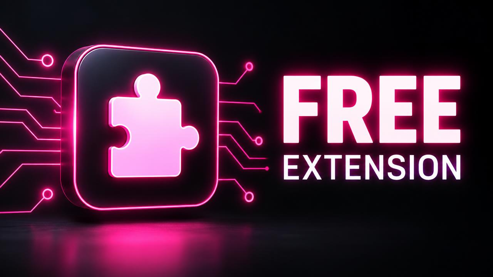
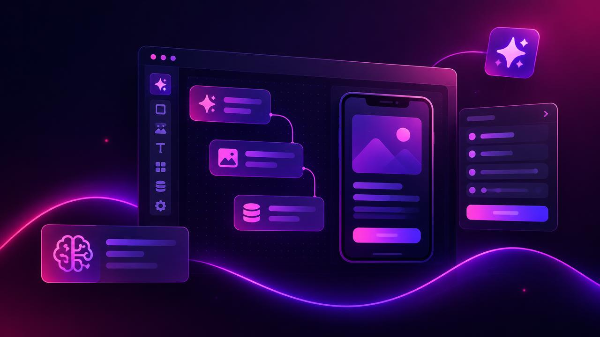

Arif is a university student in Chittagong. He wants to build a website for his college club, but he has no budget at all. He has heard about Lovable, but every video he watches uses a paid plan. His question is simple: "Can I use Lovable for free, and can I actually finish a real project on the free tier?"
The short answer is yes, with a plan. This guide explains what the Lovable free tier gives you, how Lovable free usage works, what the free credit limit means in practice, and a step-by-step plan to finish a small project without paying.
Is Lovable Free?
Lovable offers a free tier so anyone can try the platform. You can sign up, create projects, use the AI builder and preview your work without entering payment details.
The free tier is not a trial that ends after a few days. It is an ongoing free plan with a limited credit allowance. As long as the free tier exists, you can keep using it.
What the Lovable Free Tier Includes
While details can change over time, the free tier generally includes:
- A small allowance of free credits that refreshes on a schedule
- Access to the AI builder to create and edit projects
- Live preview of your app while you build
- The ability to publish simple projects (check current limits in your account)
What the Free Tier Does Not Include
- Unlimited credits (no plan has truly unlimited credits)
- Large monthly allowances for heavy building
- Some advanced or team features that are reserved for paid plans
Always check the pricing page inside your account for the exact current limits, because they can change.
How Many Free Credits Does Lovable Give?
Free users receive a small daily allowance, and a monthly cap may also apply. The exact number is shown in Settings → Plans & Credits. For a deeper look at daily credits and reset times, read our guide on the Lovable free plan and daily credits.
Understanding the Lovable Free Credit Limit
The Lovable free credit limit is the maximum you can use in a period. When you reach it:
- New AI prompts are paused until the next reset.
- Your project stays saved and safe.
- You can still preview what you built.
Hitting the limit is not a failure. It is simply a signal to stop, plan and continue after the reset.

What Can You Really Build for Free?
With careful planning, the free tier is enough for:
- A personal portfolio
- A club or event website
- A simple landing page for a small business
- A basic contact form or sign-up page
- Learning projects to practise prompting
Bigger projects like online shops, dashboards with databases or apps with many pages are possible, but they will take many days on the free tier.
Step-by-Step: Finish a Project on the Free Tier
Step 1: Write a one-page plan List your pages, the content on each page and your preferred style. Do this before you open Lovable, so you never spend credits on guessing.
Step 2: Build the structure in one prompt Use your first daily allowance for a single clear prompt that creates all pages and navigation. Example:
Create a website for a university photography club. Pages: Home, Events, Gallery, Join Us. Dark background, white text, yellow accent colour. Simple and mobile-friendly.
Step 3: One section per day Each following day, improve one page or section. For example, day two for the Events page, day three for the Gallery.
Step 4: Prepare prompts before the reset Write tomorrow's prompt tonight. When your credits reset, you use them immediately and precisely.
Step 5: Do small edits manually Change text, links and images yourself in the editor where possible. Every manual edit saves credits for real building work.
Step 6: Polish in one grouped prompt At the end, collect all small visual fixes into one numbered list and send them together.
Free Usage Tips That Make a Big Difference
- Never send "fix it" alone. Describe what is wrong in detail.
- Do not redesign halfway. Decide colours and style on day one.
- Keep the project small. Remove features you do not really need.
- Test after every prompt so problems stay small.
For twelve more tips, read how to save Lovable credits.
When Should You Upgrade?
The free tier is perfect for learning and small projects. Consider upgrading when:
- You are building for a paying client
- You have a deadline and cannot wait for resets
- Your project needs many features or a database
- You are hitting the free credit limit every day
If you reach that point, you can compare options on our products page.
How Arif Finished His Club Website
Arif followed a seven-day plan: structure on day one, one page per day after that, and polish on the last day. He prepared his prompts each night and edited text himself. His club website went live in one week without spending any money.
Final Thoughts
You can use Lovable for free, and you can finish real small projects on the free tier. The secret is not a hidden trick; it is planning, precise prompts and daily consistency. To understand how credits are counted, read Lovable credits explained.
Frequently Asked Questions
Can I use Lovable for free? Yes. Lovable has a free tier with a limited credit allowance that refreshes regularly.
Is the Lovable free tier a time-limited trial? No. It is an ongoing free plan, not a trial that expires after a few days, although the limits can change over time.
What happens when I reach the free credit limit? New AI prompts pause until the next reset. Your project is saved and you can continue afterwards.
Can I build a full website on the free tier? Yes, for small websites like portfolios, landing pages and club sites. Larger apps are possible but will take more days.
Keep reading
If this topic is useful, you may also want to read how Lovable credits work, the Lovable credit system explained, when your credits reset and what Lovable PRO includes.
- #can i use lovable for free
- #lovable free tier
- #lovable free usage
- #lovable free credit limit